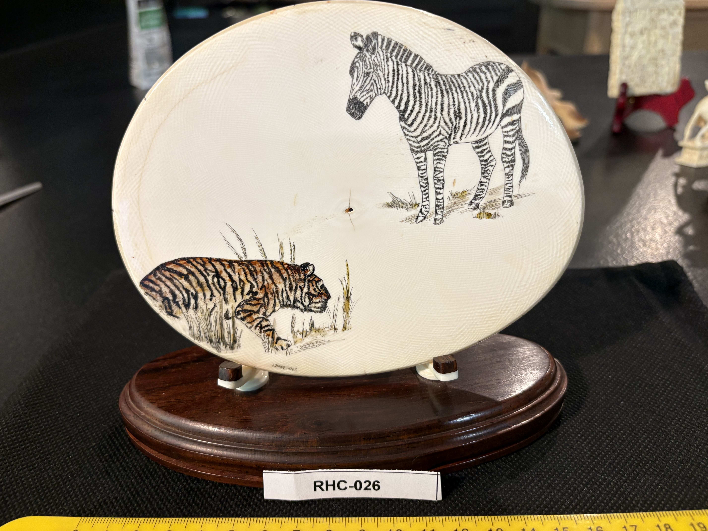
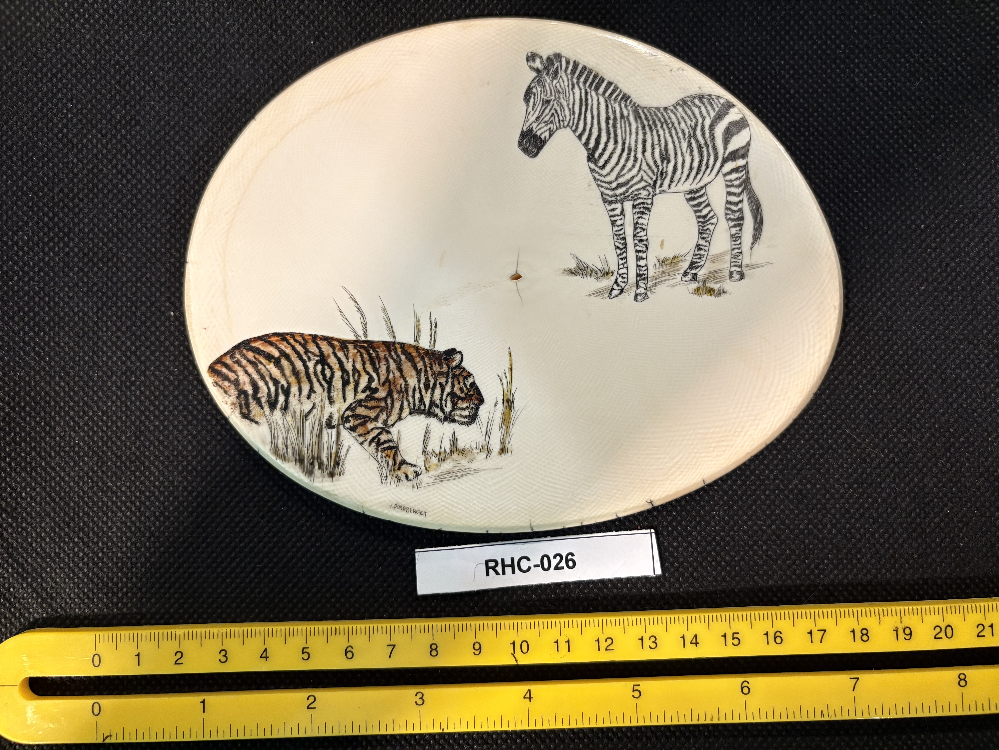
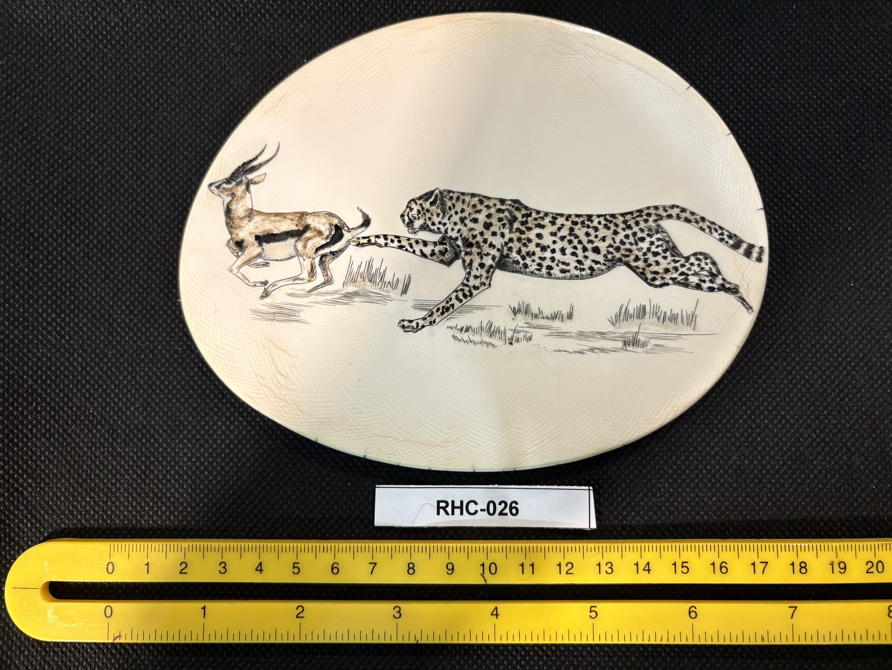

RHC-026 reviewed
Double-Sided Polychrome Oval Panel, Big Cats and Grazing Animals, Signed J. Stanberger, on Two-Prong Wood Stand



- Object Type
- Engraved oval panel, decorated on both faces, displayed upright in a round wood base via two metal spring-clip prongs
- Material
- Presumed ivory (large oval form, fine cream-white surface with visible cross-hatch/grain texture); species not confirmed.
- Dimensions (cm)
- length: 21.0cm, width: 17.0cm — Oval panel width (~21.0cm) and height (~17.0cm) estimated off the cm scale shown in the photos — by far the largest flat panel in the collection so far.
- Subject Matter
- Two independent wildlife scenes, one per face. Front: a cheetah in full sprint pursuing a gazelle/antelope through grass, both animals rendered with naturalistic tan/brown polychrome coloring and black spotting on the cheetah. Reverse: a tiger stalking low through grass (colored orange/black polychrome) in the lower portion, and a zebra grazing (black-and-white stripes, uncolored/line-only) in the upper portion — an assortment of exotic big-cat and grazing-animal subjects rather than whaling or American wildlife themes.
- Inscriptions
- “J. Stanberger (tentative reading)”
- “J. Stanberger (tentative reading)”
- Artist Attribution
- J. Stanberger (tentative reading of surname)
- Date / Period
- undated; no year found in the signature
- Mount / Display Stand
- Displayed upright in a round dark wood base via two spring-loaded metal prongs/clips that grip the panel's lower edge — a mount style not seen elsewhere in the collection, well-suited to a double-sided piece meant to be viewed from both sides.
- Color / Technique
- Polychrome scrimshaw: black ink line work throughout, with naturalistic tan/brown color washes on the cheetah, gazelle, and tiger; the zebra is left uncolored (line work only), relying on its natural stripe pattern for contrast.
- Condition Notes
- Surface appears clean on both faces with a fine visible cross-hatch/woven grain texture throughout (possibly a texturing technique or a characteristic of the material itself); no cracks or damage noted. Not physically examined.
- Distinguishing Features
- The largest flat panel in the collection so far, and the only piece confirmed to be engraved on both faces, each with an independent wildlife scene. Subject matter (cheetah, gazelle, tiger, zebra) is entirely exotic/African-Asian wildlife rather than the whaling, American wildlife, or Pacific Northwest Coast themes seen elsewhere — a notable outlier within the collection.
- Legal / Regulatory Status
- Material and species not confirmed. If ivory, age/species would need confirmation before any loan/sale (MMPA/ESA/CITES as applicable). Flag for legal review; not a legal determination.
- Rights / Copyright
- Signed 'J. Stanberger' (tentative reading) — underlying images likely remain under the artist's copyright, independent of physical ownership.
- Keywords
- cheetah gazelle tiger zebra double-sided oval panel signed J. Stanberger two-prong wood stand polychrome scrimshaw
- Status
- reviewed
- Date Cataloged
- 2026-07-15
Open Research Questions
Research finding (phase 3, 2026-07-15): General web search for 'J. Stanberger' as a scrimshaw or wildlife-art engraver turned up no public match. Given the piece's exotic (African/Asian) wildlife subject matter, distinct from typical American scrimshaw themes, this may be a wildlife-art specialist working outside the core scrimshaw-collector market rather than within it — worth a follow-up search under wildlife/animal-engraving art directories specifically rather than scrimshaw-specific ones.